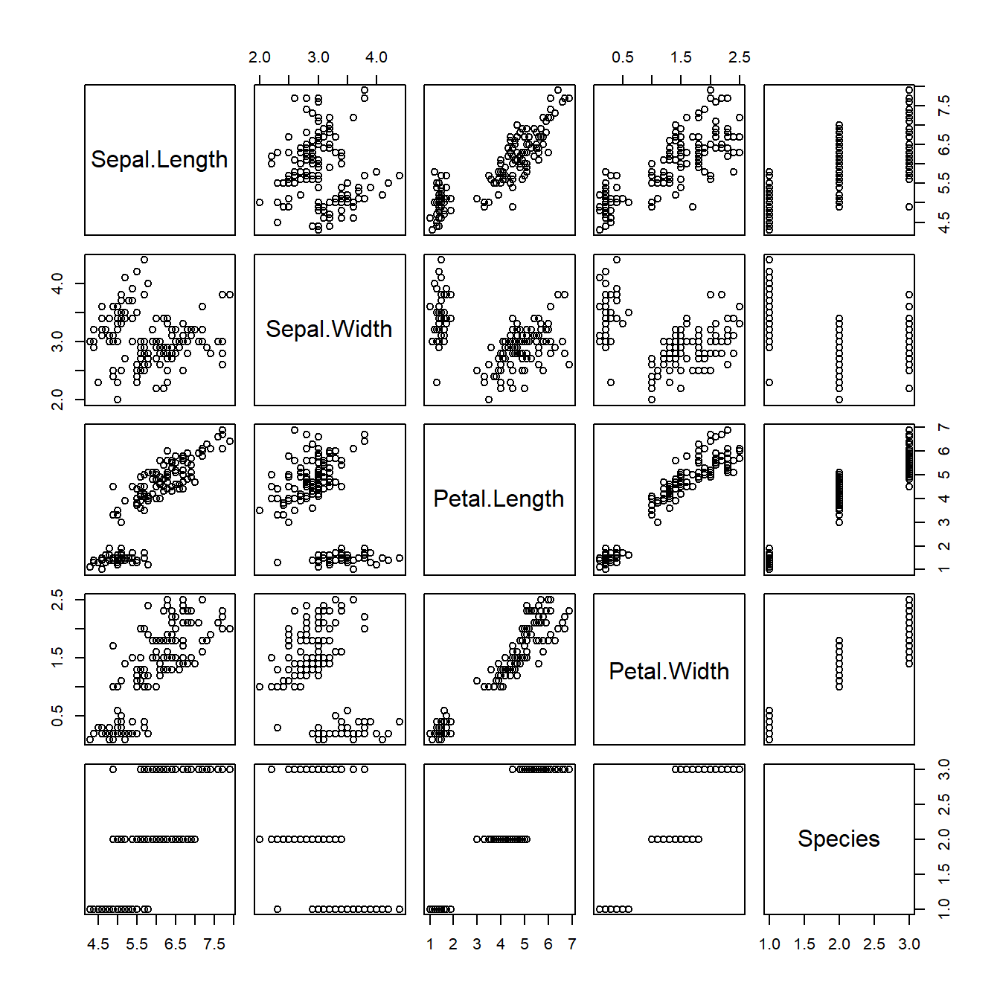
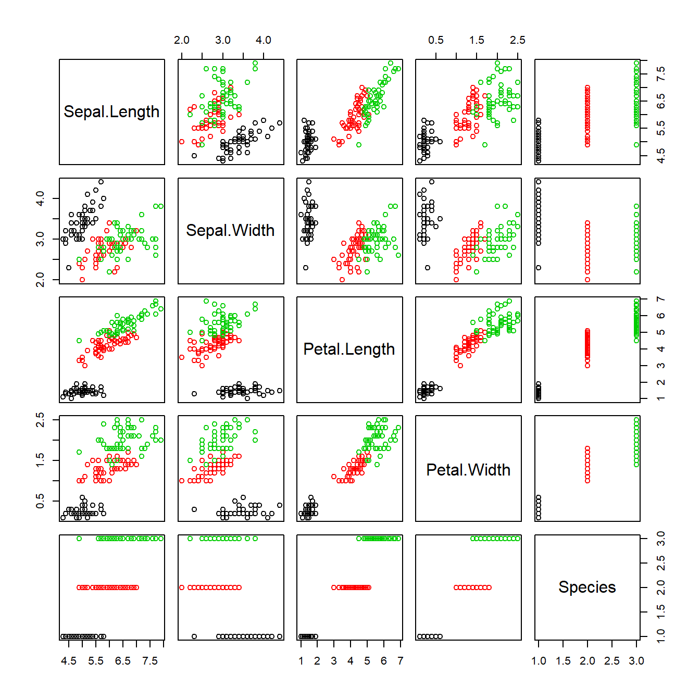
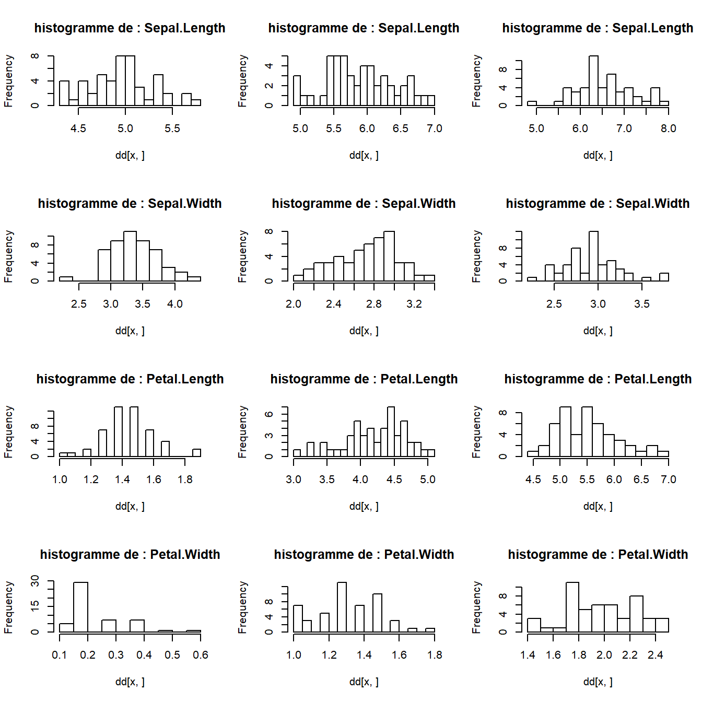
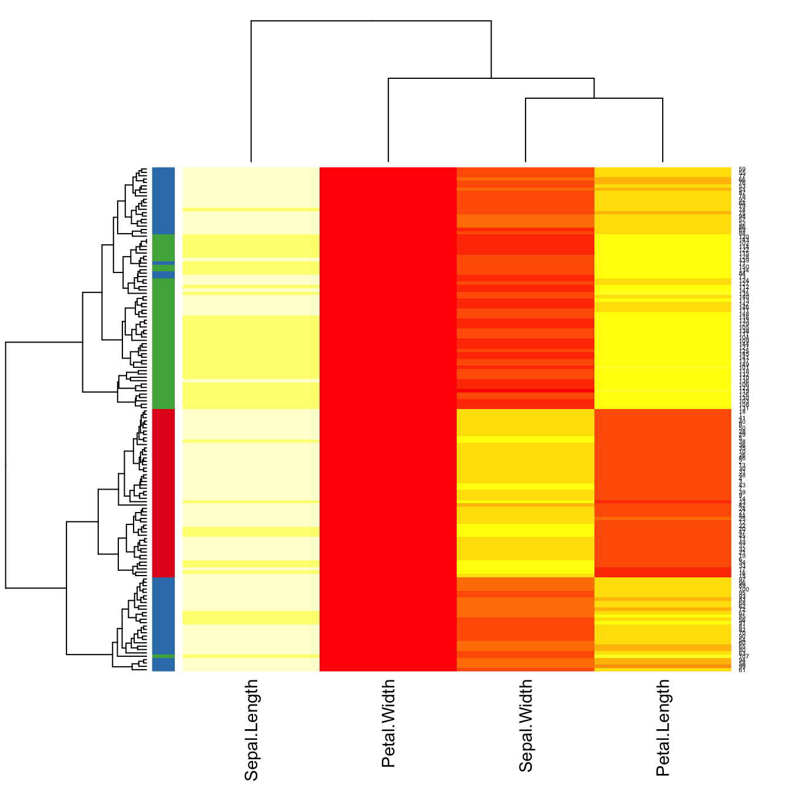
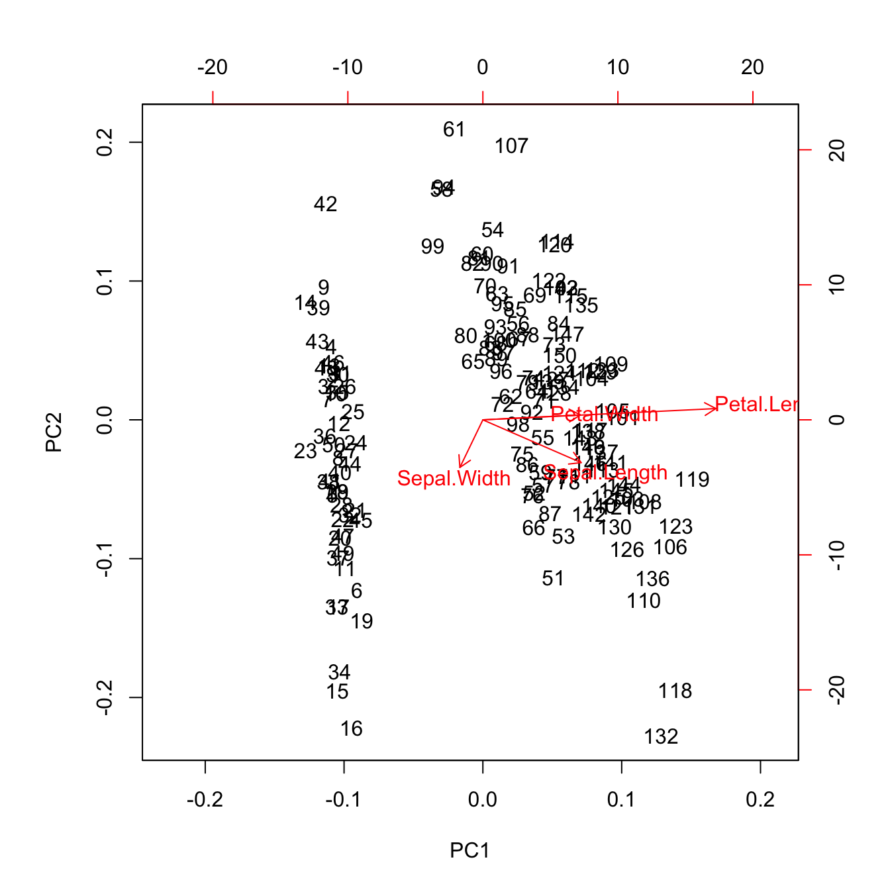

data("iris")
summary(iris) Sepal.Length Sepal.Width Petal.Length Petal.Width
Min. :4.300 Min. :2.000 Min. :1.000 Min. :0.100
1st Qu.:5.100 1st Qu.:2.800 1st Qu.:1.600 1st Qu.:0.300
Median :5.800 Median :3.000 Median :4.350 Median :1.300
Mean :5.843 Mean :3.057 Mean :3.758 Mean :1.199
3rd Qu.:6.400 3rd Qu.:3.300 3rd Qu.:5.100 3rd Qu.:1.800
Max. :7.900 Max. :4.400 Max. :6.900 Max. :2.500
Species
setosa :50
versicolor:50
virginica :50
summary(iris) Sepal.Length Sepal.Width Petal.Length Petal.Width
Min. :4.300 Min. :2.000 Min. :1.000 Min. :0.100
1st Qu.:5.100 1st Qu.:2.800 1st Qu.:1.600 1st Qu.:0.300
Median :5.800 Median :3.000 Median :4.350 Median :1.300
Mean :5.843 Mean :3.057 Mean :3.758 Mean :1.199
3rd Qu.:6.400 3rd Qu.:3.300 3rd Qu.:5.100 3rd Qu.:1.800
Max. :7.900 Max. :4.400 Max. :6.900 Max. :2.500
Species
setosa :50
versicolor:50
virginica :50
head(iris)tail(iris)str(iris)'data.frame': 150 obs. of 5 variables:
$ Sepal.Length: num 5.1 4.9 4.7 4.6 5 5.4 4.6 5 4.4 4.9 ...
$ Sepal.Width : num 3.5 3 3.2 3.1 3.6 3.9 3.4 3.4 2.9 3.1 ...
$ Petal.Length: num 1.4 1.4 1.3 1.5 1.4 1.7 1.4 1.5 1.4 1.5 ...
$ Petal.Width : num 0.2 0.2 0.2 0.2 0.2 0.4 0.3 0.2 0.2 0.1 ...
$ Species : Factor w/ 3 levels "setosa","versicolor",..: 1 1 1 1 1 1 1 1 1 1 ...plot(iris)
boxplot(iris[,1:4])par(mfrow=c(2,2))
for (i in 1:4) {
titre.hist <- paste("histogramme de :", colnames(iris)[i])
hist(iris[,i], main = titre.hist)
}par(mfrow=c(1,1))
GGally::ggpairs(iris)plot(iris, col = iris$Species)
par(mfrow=c(2,2))
for (i in 1:4) {
titre.boxplot <- paste("boxplot de :", colnames(iris)[i])
boxplot(iris[,i] ~ iris[,5])
title(titre.boxplot)
}par(mfrow=c(1,1))
par(mfrow=c(4,3))
for (i in 1:4) {
titre.histogramme <- paste("histogramme de :", colnames(iris)[i])
by(iris[,i], iris[,5], hist, main = titre.histogramme, breaks = 15)
}
par(mfrow=c(1,1))
GGally::ggpairs(iris, mapping = aes(color = Species))image(1:(ncol(iris)-1), 1:nrow(iris) ,t(as.matrix(iris[,1:4])), xlab = "variables", ylab = "Observations", las = 1)heatmap(as.matrix(iris[,1:4]), margins = c(7,4), cexCol = 1.4, cexRow = 0.5)my_group <- as.numeric(as.factor(substr(iris$Species, 1 , 2)))
my_col <- brewer.pal(3, "Set1")[my_group]
heatmap(as.matrix(iris[,1:4]), RowSideColors = my_col,
margins = c(7,4), cexCol = 1.4, cexRow = 0.5)
iris.acp <- prcomp(as.matrix(iris[,1:4]))
plot(iris.acp)biplot(iris.acp)